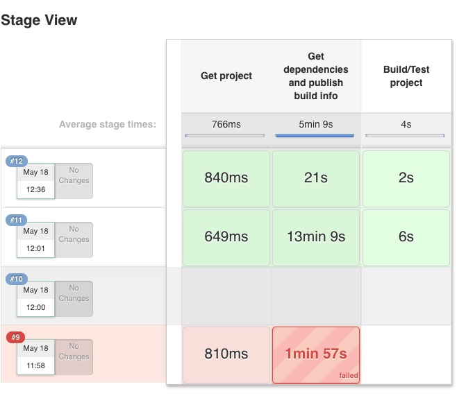
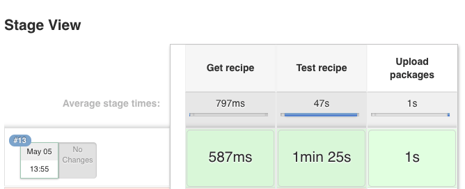

Jenkins¶
You can use Jenkins CI both for:
- Building and testing your project, which manages dependencies with Conan, and probably a conanfile.txt file
- Building and testing conan binary packages for a given conan package recipe (with a conanfile.py) and uploading to a conan remote (Artifactory or conan_server)
There is no need for any special setup for it, just install conan and your build tools in the Jenkins machine and call
the needed conan commands.
Artifactory and Jenkins integration¶
If you are using Artifactory you can take advantage of the Jenkins Artifactory Plugin. Check here how to install the plugin and here you can check the full documentation about the DSL.
The Artifactory Jenkins plugin provides a powerful DSL language to call conan, connect with your Artifactory instance, upload and download your packages from Artifactory and manage your build information.
Example: Test your project getting requirements from Artifactory¶
This is a template to use Jenkins with Artifactory plugin and Conan to retrieve your package from Artifactory server and publish the build information about the downloaded packages to Artifactory.
In this script we assume that we already have all our dependencies in the Artifactory server, and we are building our project that uses Boost and Poco libraries.
Create a new Jenkins Pipeline task using this script:
//Adjust your artifactory instance name/repository and your source code repository
def artifactory_name = "artifactory"
def artifactory_repo = "conan-local"
def repo_url = 'https://github.com/memsharded/example-boost-poco.git'
def repo_branch = 'master'
node {
def server = Artifactory.server artifactory_name
def client = Artifactory.newConanClient()
stage("Get project"){
git branch: repo_branch, url: repo_url
}
stage("Get dependencies and publish build info"){
sh "mkdir -p build"
dir ('build') {
def b = client.run(command: "install ..")
server.publishBuildInfo b
}
}
stage("Build/Test project"){
dir ('build') {
sh "cmake ../ && cmake --build ."
}
}
}

Example: Build a conan package and upload it to Artifactory¶
In this example we will call conan test package command to create a binary packages and then upload it to Artifactory. We also upload the build information:
def artifactory_name = "artifactory"
def artifactory_repo = "conan-local"
def repo_url = 'https://github.com/lasote/conan-zlib.git'
def repo_branch = "release/1.2.11"
node {
def server = Artifactory.server artifactory_name
def client = Artifactory.newConanClient()
def serverName = client.remote.add server: server, repo: artifactory_repo
stage("Get recipe"){
git branch: repo_branch, url: repo_url
}
stage("Test recipe"){
client.run(command: "create")
}
stage("Upload packages"){
String command = "upload * --all -r ${serverName} --confirm"
def b = client.run(command: command)
server.publishBuildInfo b
}
}
